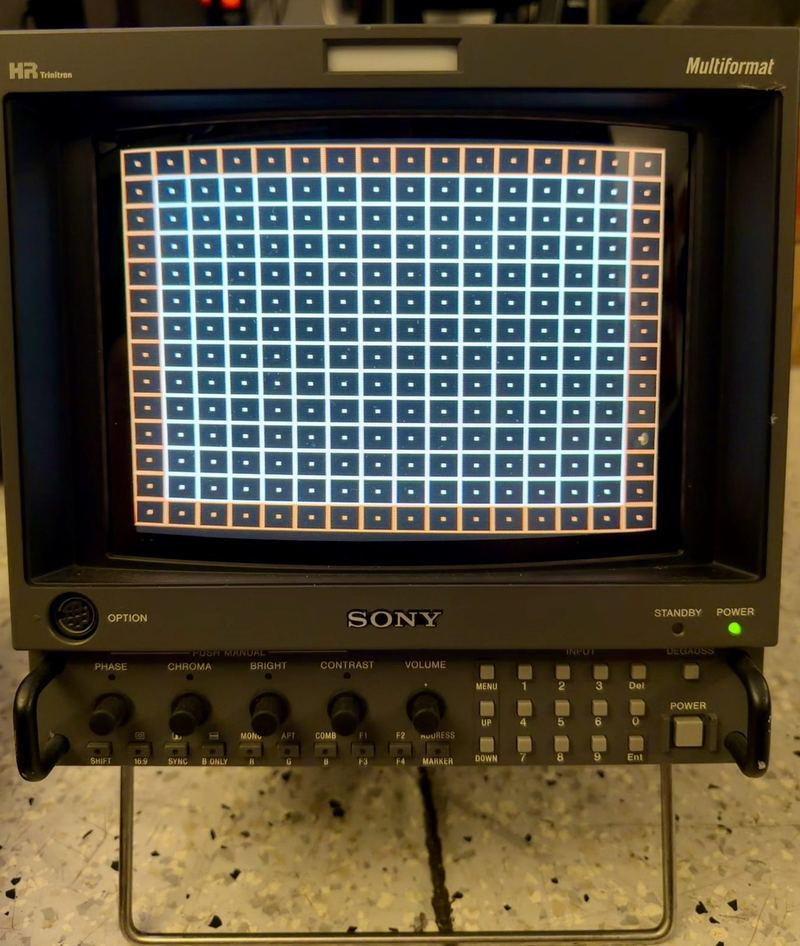
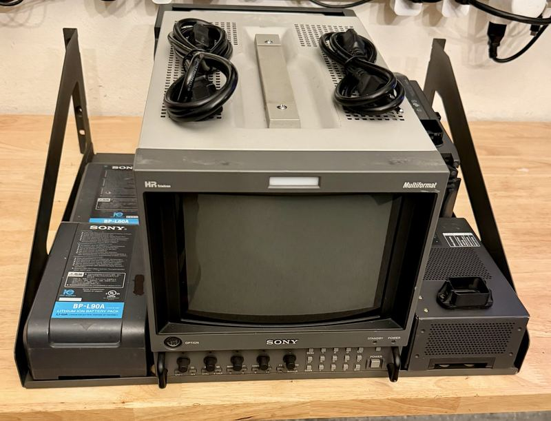
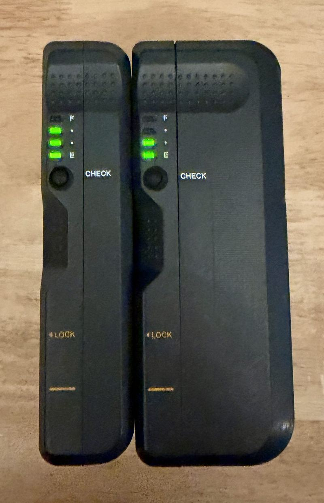

Player 2 Wanted
For Sale
The collection consolidates over time — duplicates and departures get listed so they can go to someone who'll use them. Sales run through eBay with years of seller history behind them.
Currently listed

Sony BVM-D9H5J
Sony's 9-inch multi-format broadcast reference monitor — the portable D-series legend. This unit is fully kitted with input cards (BKM-129X-compatible analog input plus BKM-142HD HD-SDI). A serious little monitor for a serious setup.
More on eBay
Vintage gaming & electronics
Collectibles, arcade hardware, and rare electronics get listed regularly.



Recently sold: Sony BVM-14F5U broadcast monitor and a Sony AC-D9H power supply (August 2026).